Projects
-
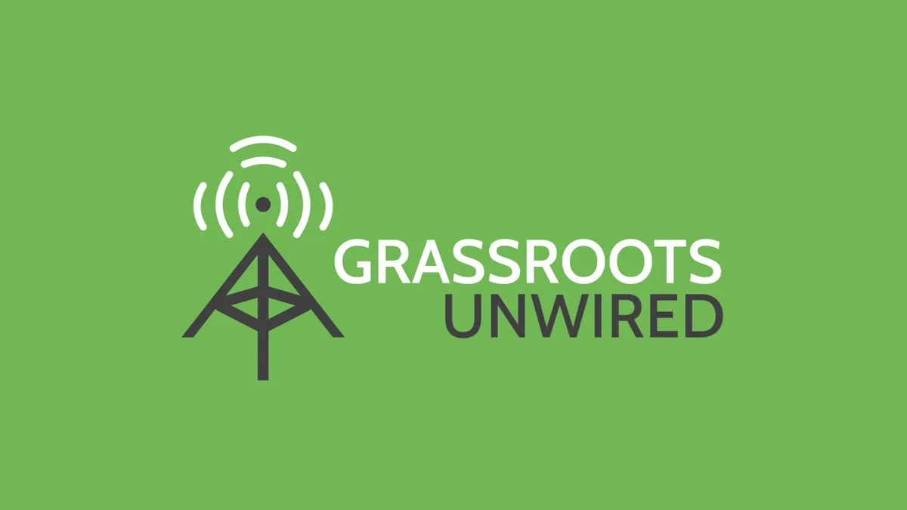
Grassroots Unwired
A clearer canvassing tool for the field.
A clearer canvassing tool for the field.
Role: UX/UI Design
- Figma
Overview
Grassroots Unwired is a platform canvassing teams use to collect data, manage outreach, and track engagement in the field. This was paid freelance client work. I redesigned the canvassing experience as the only designer and wrote no code. I worked with the client's programmer to catch potential snags in the design.
The problem
Canvassers collect data in the field while talking to people. The existing interface made that harder than it needed to be, with unclear navigation, dense layouts, and slow data entry.
Users and constraints
The app is used on tablets and desktop, not on mobile. The design had to hold up under a few constraints:
- Use on tablets and desktop
- Time-sensitive interactions that demand speed and clarity
- High-volume data entry during conversations
- Clear structure across complex workflows
Design approach
- Streamlined navigation to reduce cognitive load
- A clearer hierarchy that puts primary actions and information first
- Less friction in data entry and task completion
Visual system
I defined typography, color usage, and component styles so the interface reads clearly. I made the design language adaptable so it could be reused for mobile later.
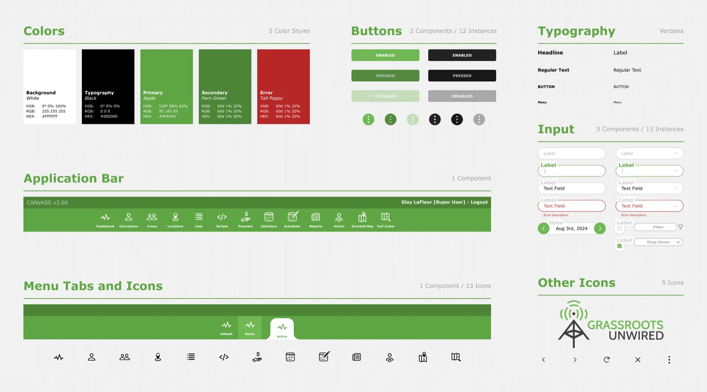
The style guide: typography, color, and core components. Redesigned dashboard
The dashboard now leads with the information and actions people need most, so they can see their tasks and get around the app at a glance. It has a clearer content hierarchy, less visual clutter, and more accessible primary actions.
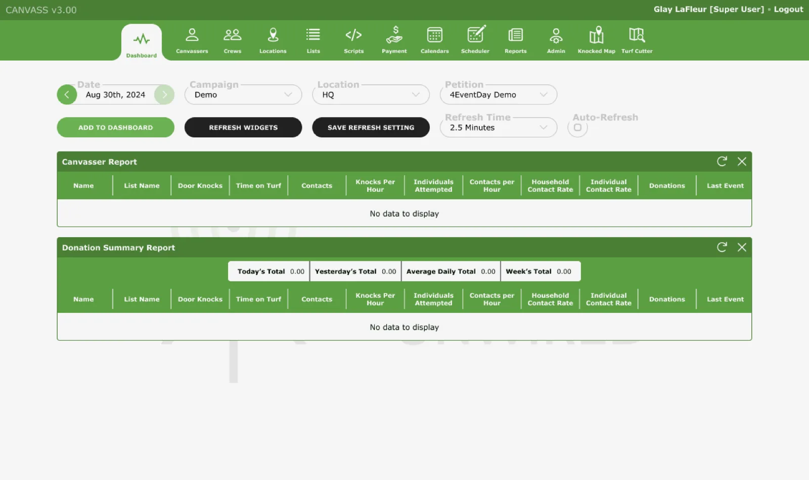
The redesigned dashboard. Before and after
The original dashboard packed information together, which made key actions hard to spot. The new version simplifies the layout and emphasizes structure, clarity, and ease of use.
The original dashboard, for comparison. What happened next
The design was built and in use within a month of my submitting it. I don't have results from after launch. There was no user testing and no feedback from canvassers. The only feedback came from the client while I built the design system. The client has come back to me for other projects a few times.
Reflection
In time-sensitive work like this, clarity, hierarchy, and efficient interaction matter most. With another iteration, I would bring in direct user feedback and usability testing to validate and refine these changes.
-
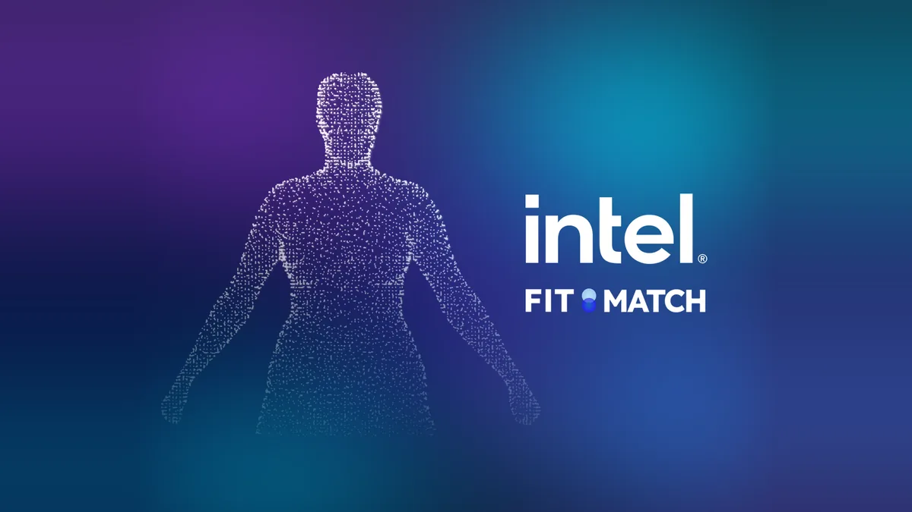
Intel 3D Fitting Room
Body scanning tech to find your fit.
Body scanning tech to find your fit.
Role: UX/UI Design
- Figma
Overview
I designed this interface to showcase FitMatch body scanning technology at the Intel Innovation 2023 Keynote. During the keynote, CEO Pat Gelsinger did a live demo of the product. It was one of the most exciting projects I've worked on, knowing it would be shown at such a large event. FitMatch reported about 28K combined viewers for the keynote.
I was the design lead at FitMatch, with two people under me who didn't work on this project, and I owned the design front to back. FitMatch's engineers built the interface, and I worked closely with them on schedule and technical feasibility. I prepared the designs ahead of development and attended the keynote virtually. Most changes before the keynote were small tweaks, wording changes and some branding requests, since it was a FitMatch product sponsored by Intel and showing Brooks products. When my boss or the CEO disliked something, I went with their call.
My part was the interface only. The interface ran on a 27-inch touchscreen monitor in portrait orientation, and the same screens were used when the software was shown at American Dream Mall. The scanning and sizing technology belongs to FitMatch: the point-cloud avatar comes from the scanner, and the size recommendations come from an algorithm created by Dr. Jie Pei, FitMatch's Chief Data Scientist. Dr. Pei holds a Ph.D. from Cornell University's College of Human Ecology and patented the core 3D body-mapping technology behind the platform.
Design language
The brand called for a futuristic, clean look. I modeled much of the design language on Apple's human interface principles, which shows in the rounded, glass-like buttons, the clean type, and the generous space around every element. The avatar itself comes from the scanner, but how it looks on screen was my call: I styled the point cloud against the background and chose the color of its dots.
Welcome and scan guide
The welcome screen has one job: get someone to start. A figure drawn as a cloud of points fills the screen, with "Tap anywhere to begin" below it, so there is no small target to find. The same point-cloud look returns on the avatar after the scan. The footer credits both partners, "Accelerated by Intel" and "Products from Brooks", on the welcome, scan and results screens.
The scan screen has to teach a pose at a glance. It shows a simple illustration of the A-like pose, with two small callouts, "Arms out at an angle, away from body" and "Stand with feet apart". Two circles on the floor under the figure mark where the heels go, and the key words in each instruction are bold: A-like pose and heels in each circle. A Back button is there if someone changes their mind, and a single large Start Scan button is the only action on the screen.
Welcome (left) and Begin Scan (right). Results and dashboard
The recommendations themselves come from FitMatch's sizing algorithm, so my job was presenting them clearly. The results screen opens with "We found your fit!" and a small version of the avatar that can be dragged to rotate. Below it, Tops and Bottoms tabs organize clothing into groups such as Short Sleeve Tees, Polo Shirts and Long Sleeves. Each item shows a photo, its name and a suggested size. A short note explains that size results can vary by clothing style. Two buttons sit beside the avatar: View My Dashboard and Rescan.
The dashboard gathers the result in one place: the avatar, the name it belongs to, and where and when it was scanned. The sample shown here is a scan at American Dream Mall on October 10, 2023. It also has a Brooks discount code and a row of Brooks products matched to the person, each with a suggested size and color options.
Found your fit (left) and Dashboard (right). Accessibility
This is a public screen that strangers walk up to, so I made everything as easy to read and tap as I could, with large type and large controls on high-contrast dark backgrounds. I also advocated for screen reader support through a speaker built into the booth. It wasn't adopted.
See it in action
Intel CEO Pat Gelsinger's walkthrough begins at 1:13:30 in the keynote recording, and the video below starts there. Everything was designed to feel futuristic while staying easy to follow on stage.
-
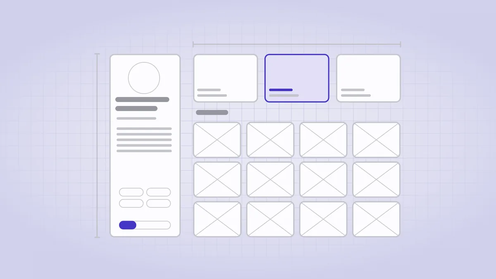
Portfolio, 2026
Designed in Figma, built with Claude Code.
Designed in Figma, built with Claude Code.
Role: UX/UI Design, Web Development
- Figma
- Claude Code
- HTML
- CSS
- JavaScript
Overview
My last portfolio was a playful one-off. This one is quieter and puts the work first: a single page of project tiles that open into full write-ups. I designed it in Figma and built it with Claude Code, an AI coding assistant that works in my editor. It is plain HTML, CSS and JavaScript, with no framework and no build step.
Working with Claude Code
I treated Claude Code like a fast, literal-minded collaborator. I described what I wanted and why, it wrote a first pass, and I reviewed the result in the browser and pushed back. The design decisions stayed with me: the layout, the type, the spacing, what gets cut. The craft details below were my ideas. I explained how they should work, like how corner smoothing works in Figma, and had Claude Code carry them out.
To start, I wrote a prompt for Claude Code using the frontend-
design skill. I had it outline what information it needed first, filled that in, and gave it rough Figma wireframes. That got me about 70% of the way there. The rest was small tweaks, fine-tuning and polish. A few things worked well:
- Small, specific requests, one change at a time, instead of "make it better"
- Giving it the reason behind a change, not only the change
- Reviewing every diff, and checking the result on desktop and mobile before moving on
Not everything stuck, and that was useful. I tried a frosted pill floating over each cover image to show the role and tools, and it looked detached from the text it described, so it became chips under the tagline. I also tried turning the mobile modal into a bottom sheet you scroll to dismiss, decided I didn't like it, and went back. Being able to try an idea in minutes made it easy to find out it was wrong.
Corner smoothing
Everything on this site is rounded, so the shape of the curve matters. A CSS border-radius is a circular arc: a straight edge runs into a corner and the curve begins abruptly. Figma's corner smoothing, the look of an iOS icon, starts the curve earlier and eases into it, so the edge flows into the corner without a visible join. At 60%, the setting I use, the curve starts 1.6 times the radius away from the corner instead of one radius.
CSS has no cross-browser property for that, so the site draws it. A small script reads each element's size, works out the curve with the same geometry Figma uses (two Bézier sections around a shortened arc), and applies the result as a clip-path. It recalculates whenever an element resizes.
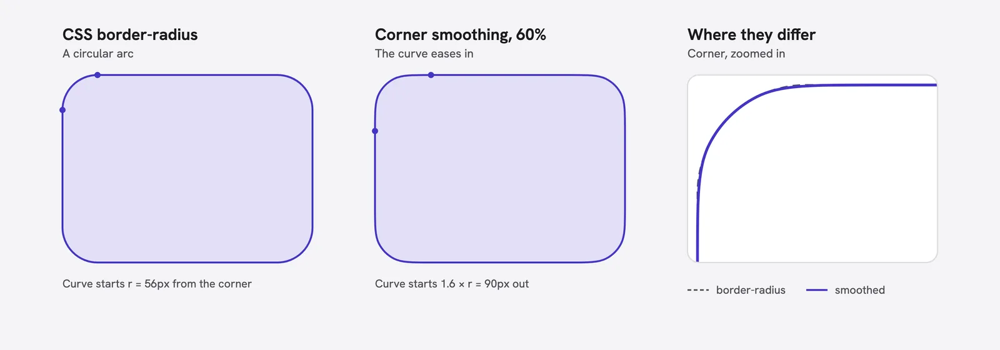
A plain radius (left) and 60% smoothing (middle). The dots mark where each curve begins. On the right, a corner zoomed in with both outlines overlaid. At a glance the difference is subtle, and that's the point. You don't consciously see it, but the corners feel softer and less pinched. It's the kind of detail you'd notice only if it were missing.
Drawing corners this way caused a few small problems, and I solved each one:
- Clips clip outlines. A clip-path also cuts off borders and focus rings, so the hairline around each tile and its hover ring are drawn as separate shapes that follow the same curve.
- Shapes that can animate. Every path has the same structure, so the browser can interpolate between them. When a tile opens into the modal, its outline morphs into the modal's instead of one popping over the other.
- It steps aside when it should. With forced colors or increased contrast, the script doesn't run. The normal border-radius and real borders stay, because a clipped shape would remove the borders those modes depend on.
Small details
A lot of this project is in things most people will never consciously notice. These are the ones I like best:
- Covers made to crop. Each cover is 16:9, with its important content inside a centered 4:3 area. The tile shows that center and the modal shows everything. On this project's own wireframe cover, the background grid fades out before it reaches the edges, so no lines run toward the tile's rounded corners and fight the curve.
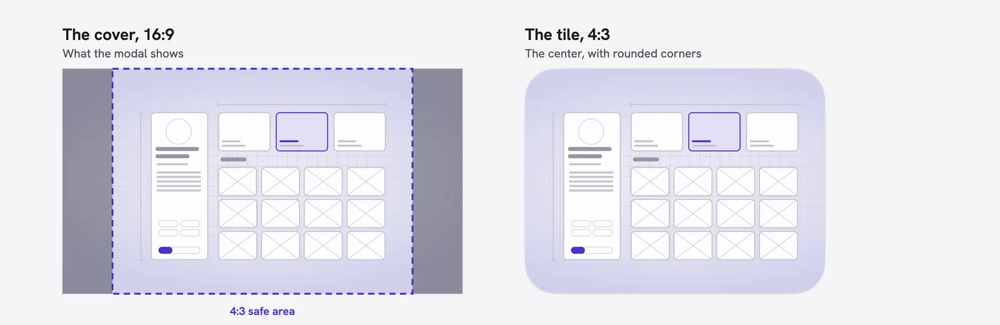
The cover in the modal (left) and the center 4:3 crop shown in the tile (right). - A close button that sits in the curve. It's placed twice the modal's inset from the corner, so it sits comfortably inside the rounded corner instead of looking jammed into it.
- Captions that don't depend on hover. On desktop, a tile's caption slides up on hover. Touch screens have no hover, so on small screens and touch devices the caption is always visible, and a project's name is never hidden behind a gesture.
- One-line taglines. Tile taglines are held to a single line with an ellipsis, so the caption boxes are the same height from tile to tile and the grid stays calm.
- Chips that read as text. The role and tools chips are real text, with "Role" and "Tools" labels hidden from view but available to screen readers, so the row reads as a labeled list and not a scattering of pills.
- Contrast by design. The role chip's color comes from the cover, but its lightness is fixed separately for light and dark themes to keep its text readable.
- Focus that doesn't get lost. When a project opens, focus moves to its title so keyboard and screen reader users start in the right place. When it closes, focus returns to the tile you came from, without the selected look a mouse user would find odd.
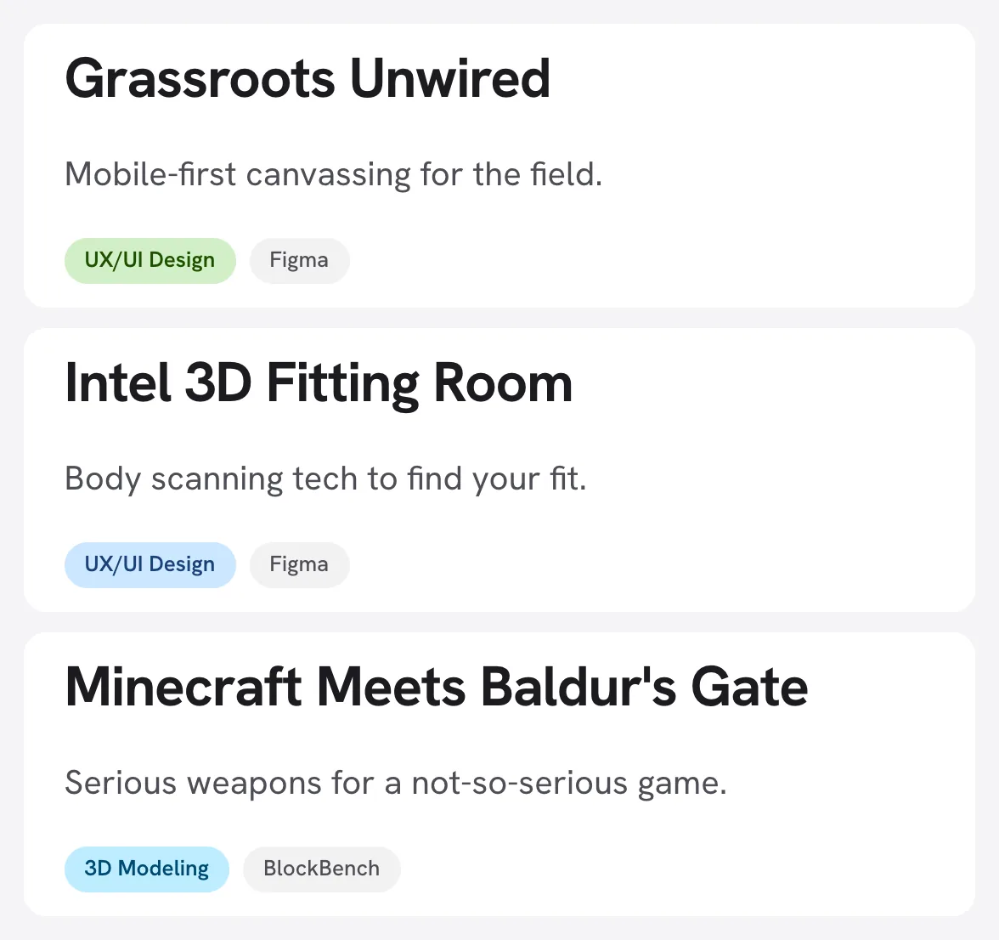
The role chip takes its color from each project's cover. Accessibility
The site follows the system's Light and Dark settings, with a manual switch to override them. Both themes are designed, not simply inverted: every color has its own light and dark value, and the iris accent lightens in dark mode so it keeps its contrast.
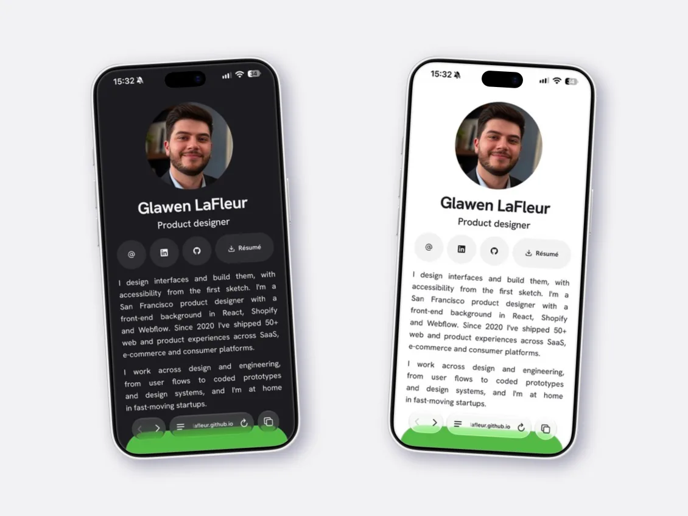
The mobile site in dark mode (left) and light mode (right). WAVE (wave.
webaim. org) gives the site an AIM score of 9 out of 10, as I reported it. Claude Code handled the contrast, reduced transparency and forced-colors or high-contrast modes and tested them. I haven't tested those myself, and I haven't run Lighthouse or axe yet. There's a skip link and visible focus states, the modal closes with Esc or the browser's back button, and every project has its own link so it can be shared. Without JavaScript, every project is still readable as a plain page. Reflection
Claude Code made me faster at turning an idea into something I could look at, and that changed how I design: I could judge a real, working version instead of imagining it. It didn't replace taste or judgment. The best results came when I was clear about what I wanted and quick to say when something was off. I'd work this way again, with the same habit of reading everything it writes.
More Work
-
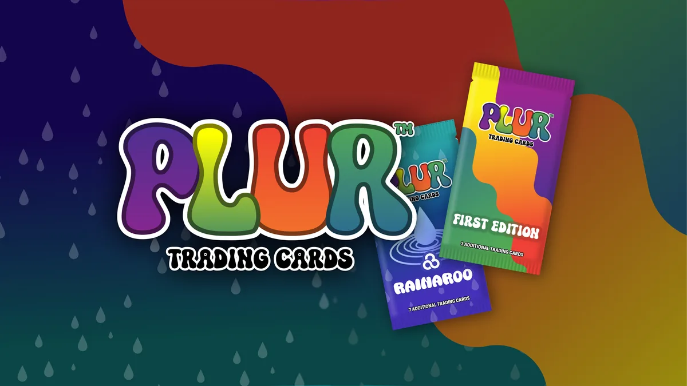
PLUR Trading Cards
Collectible cards from the festival floor.
Collectible cards from the festival floor.
Role: Product Design, Photography, Illustration
- Figma
- Procreate
- Shopify
- Liquid
- CSS
Overview
PLUR Trading Cards was my own small business. I made collectible trading and booster card sets themed around EDM culture, raves and music festivals. Each festival got its own pack every year, using photos and illustrations from that year. It ran from fall 2024 to spring 2026.
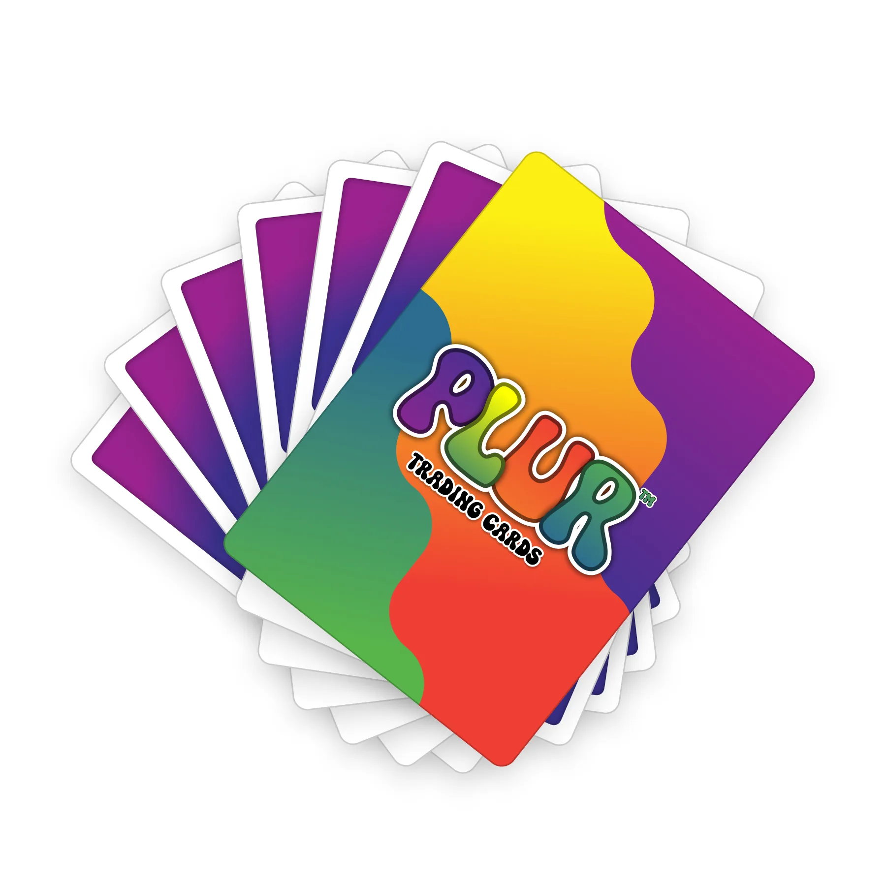
The card back, the one design shared by every pack. Why I made it
PLUR stands for Peace, Love, Unity, Respect, and it's something I really believe in. At a festival it means making a space that's safe and fun, where people look out for each other. It also means making connections with complete strangers that you'll remember for a long time.
Sharing trinkets is a big part of that. People hand each other small things, just to give someone a bit of joy. I loved that idea, and a trading card is a good trinket: small, collectible, easy to hand to someone you've just met. That's what I wanted the brand to be.
What I did
I did every piece myself: the brand, the cards, the packaging, the merch designs, and the store. About 95% of the photos and illustrations were made or shot by me. A few cards used friends' festival photos, with their permission and their names credited on the card.
The brand
I wanted it to look like a festival feels: loud, warm and friendly. The logo is a modified version of the typeface Super Arena. I adjusted the letters by hand to fit the brand, then filled them with a gradient that runs from purple to green with a dark outline. "Trading Cards" sits underneath in a smaller, outlined face.
The other half of the identity is a wavy, flowing shape in rainbow colors. It's on the back of every card, the First Edition pack, the bucket hat, the bandana and the keychain. Because it's a simple shape in a few colors, it could go onto very different objects and still read as the same brand. Later I used softer blobs of the same kind as the backgrounds for product images in the store.
Packs and packaging
The first set, First Edition, was a special print made for Bonnaroo 2025. Each pack was designed in Figma. The cards themselves were printed by an outside company so they'd have a high-quality finish, but the packaging I printed myself, on a home printer. I sealed every pack by hand. I planned to automate that once sales picked up.
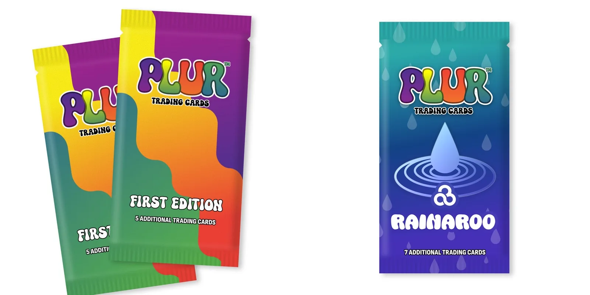
First Edition (left) and Rainaroo. The back of each pack has a short note about the set and a QR code that goes to the website, where you could learn more and buy packs. At the start it was my main marketing tool, since a pack that ended up in someone's hands could lead straight to the store.
From Cosmic Flow to Rainaroo
The official Bonnaroo 2025 set was originally called Cosmic Flow. It was planned as a bigger set of new cards based on the festival's stages, landmarks and food, plus a few reprints from First Edition. It had a purple pack with a swirling cosmic mark, and it was already open for pre-order.
Then the festival was canceled. Heavy rain hit on Friday, June 13, and a forecast of steady rain threatened the campsites and the roads out. Organizers ordered an evacuation and ended the weekend at about 7:30 PM that night, with full refunds for ticket holders. They later announced a gap year before the festival returns. I'd been there for only two days.
I had to build the set from what I'd captured in those two days. The theme stopped being about the festival's stages and became about the rain, so the set became Rainaroo, with a blue and teal pack, a droplet and ripples, and rain across the artwork. It's the same pack in a new theme. The mockups below show how closely the two match, down to the QR code, and the back text on the Rainaroo mockup still says Cosmic Flow.
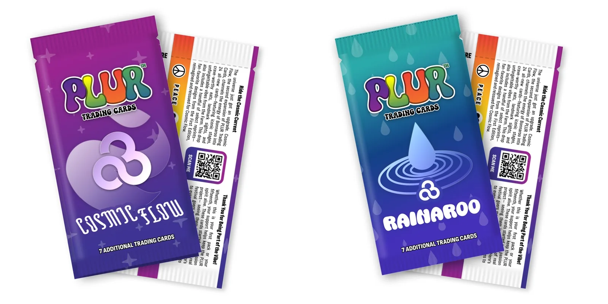
Cosmic Flow, the original plan (left), and Rainaroo, what it became. Promo cards at Elements
The Elements edition was also in 2025. For it I illustrated a promo card to hand out. It's called "Balance" and shows the four elements, fire, earth, air and water, in one design. Since the whole idea of the brand was sharing, giving cards away mattered as much as selling them.
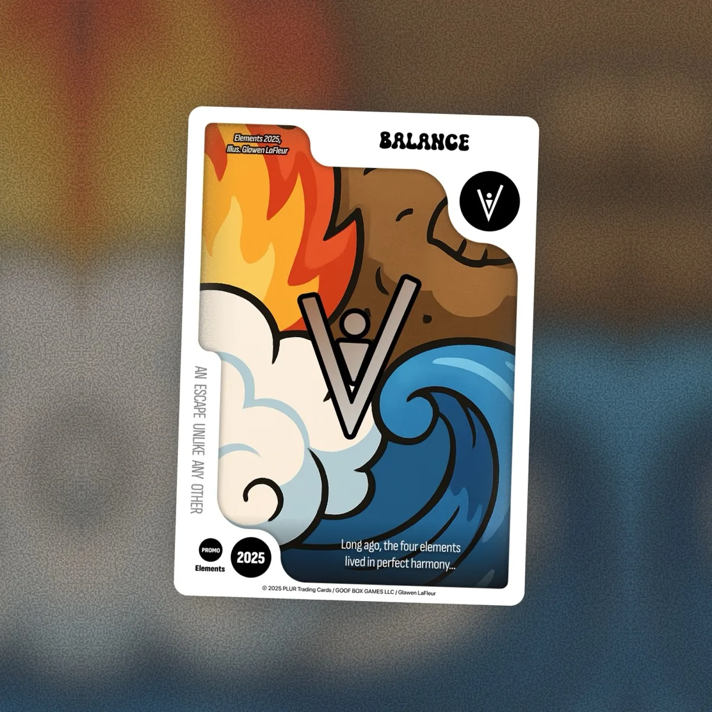
The Elements 2025 promo card. Merch
I wanted the brand to live outside the cards, so I made a few pieces of merch. Four reached the store: a bandana, a bucket hat, a t-shirt and a sticker.
The bandana uses the wavy shapes at full scale, so it's more a color field than a logo. I added a small PLUR mark in one corner. 25% of its sales went to The Trevor Project, and its product image carries their logo as a badge.
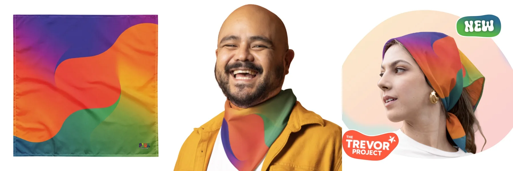
The bandana, laid flat and as a mockup worn two ways. The people are mockup models. The t-shirt is the most expressive piece. The front has just a small PLUR logo on the chest. The back is a large illustration of the words Peace, Love, Unity and Respect, surrounded by flowers, a peace sign, a heart, a yin-yang and a handshake, in a retro, hand-lettered style. I mocked it up by hand in Procreate and then cleaned it up in Figma as an SVG, so it prints sharply at any size.
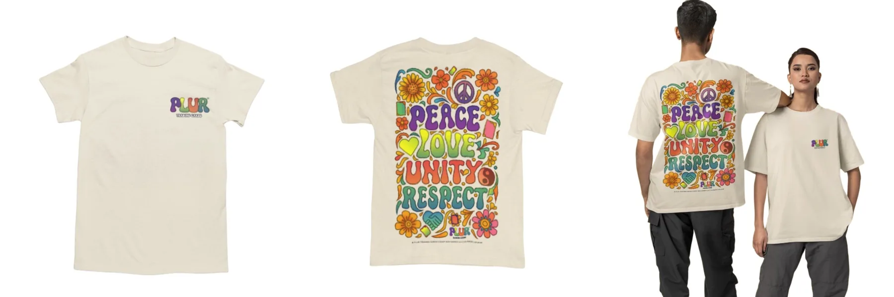
The shirt: a quiet front, and a loud back. Not everything I designed made it to market. A fanny pack and a keychain stayed concepts.
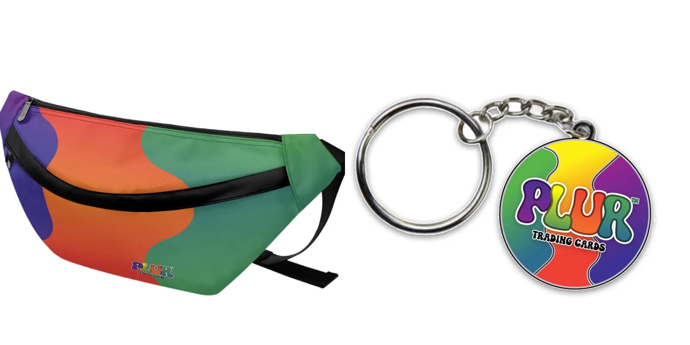
A fanny pack and a keychain that never launched. The store
The Shopify store started from an existing theme. I tweaked it and built on it with theme settings, my own CSS, edited Liquid and a few added apps. I didn't build it from scratch. It's been a while, so I don't remember which theme or apps I used.
I don't have any screenshots of the store, and it isn't in the Wayback Machine, so I can't show it. What I do have are the product images, and a lot of the look came from them. Each product sat on a soft, organic blob in warm pastels, with a sticker-style badge on top: green "New", purple "Pre-order", orange "Low stock". The badges used the same rounded type and shapes as the logo, so a page felt like part of the brand instead of a template.
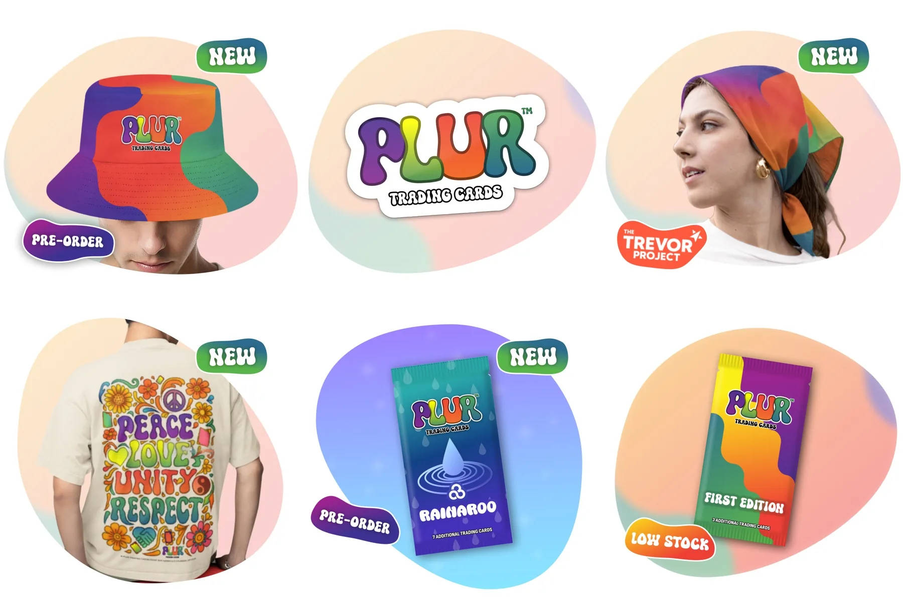
Product images from the store, with their badges. The experience
What I remember most isn't the product. It's the people. Handing a pack to a stranger turned into a conversation, and a lot of those turned into connections I still think about. I met all sorts of incredible people, and I'd never have met most of them any other way. Seeing someone's face when they got a card they hadn't expected was the best part of the whole thing.
It stayed small, but it was starting to take off when I closed it.
Closing it
I had to close the business in spring 2026. Starting a business is expensive, and life circumstances made it impossible to keep up. It still pains me, because this was a brand I loved and stood behind.
Looking back
There isn't much I'd do differently. I believed in what I was making, and I'm proud of it: the brand, the cards, the packs, the merch and everything around them.
-
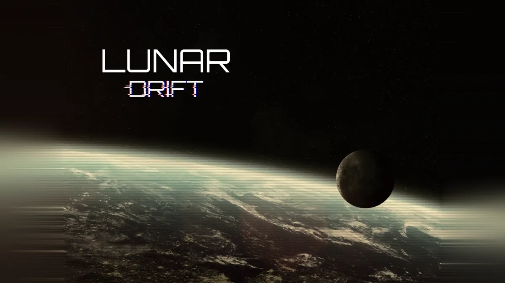
Lunar Drift
A space-game UI that builds the atmosphere.
A space-game UI that builds the atmosphere.
Role: Game UI Design
- Figma
Overview
Lunar Drift is an independent concept: a space game UI I designed alone, for fun, entirely in Figma. It was never built or tested in a game engine. A game's UI can be a complete game-changer (pun intended) for atmosphere and immersion, and I wanted to capture that for this space-themed game.
Splash screen
First I needed a typeface that felt space-age but stayed simple to read. From there I created the game's logo and customized the letters in "DRIFT" so they look like they're glitching.
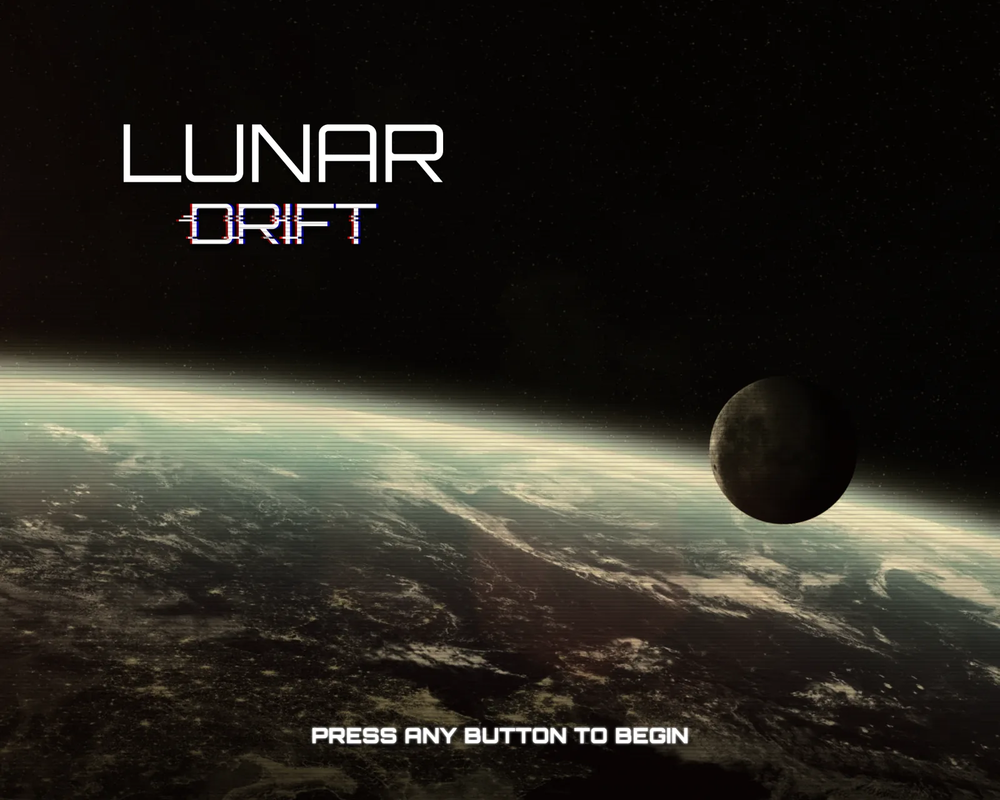
The splash screen. Title screen
I wanted the buttons to resemble an old-school monitor, scan lines and all, and added a glow so they feel back-lit. The background still felt plain, so I carried the scan lines across the full screen on the splash and title screens to set the mood.
The title screen. In-game UI
In game, curved segmented gauges frame the view on either side, tracking health, oxygen, and other stats without covering the scene. As a stat decays, its segments empty and shift color so the state reads at a glance.
The in-game UI. 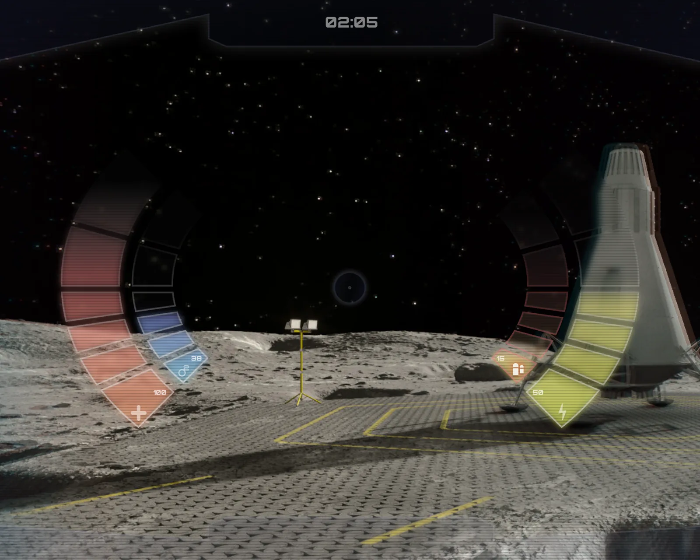
The in-game UI, with decay on stats. -
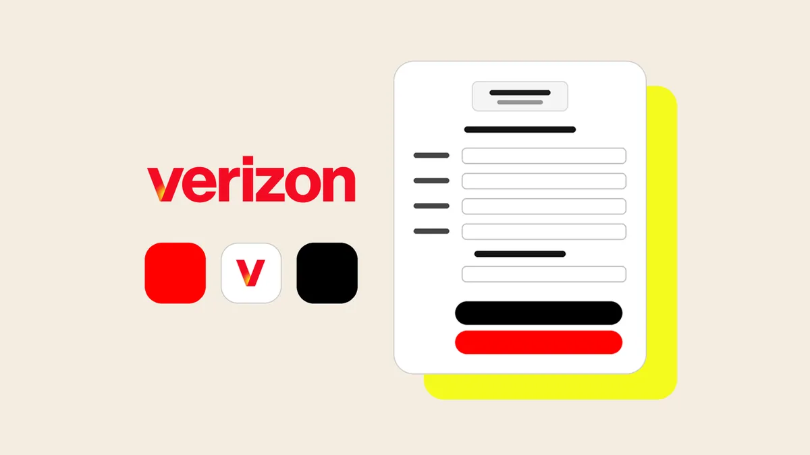
Verizon Web Form
A contact form, rebranded.
A contact form, rebranded.
Role: UI Design, Web Development
- Figma
- CSS
Overview
This was a three-day project in about April 2026, through a company that Verizon hired. A contact form was being moved from Frontier branding to Verizon branding. The move was still in progress, so the design shows the Frontier logo with "A Verizon Company". The client wanted the final switch to be as easy as swapping an image.
What I did
I was asked to give the form a full refresh to match Verizon's styling and brand. I was the only designer. I designed desktop and mobile versions in Figma over a few rounds of feedback from the agency's owner and coder, then wrote the CSS by hand. I didn't write any HTML or JavaScript. I worked within fixed fields and a three-day timeline.
What I started with
I was handed an existing design to edit. It was a dark page with a neon headline, cyan stripes, and each question boxed off on its own, with the Frontier logo tucked in a corner. There were three screens, each in desktop and mobile: a language select, the form, and a thank-you page.
The form was split into four boxed sections: contact information, which services the person wanted (fiber internet, phone and TV), a good time for a callback, and a "Don't want to wait?" button to ask for a call right away. Below those sat a Submit button. On mobile, the labels shared a narrow row with their fields and wrapped onto two lines.
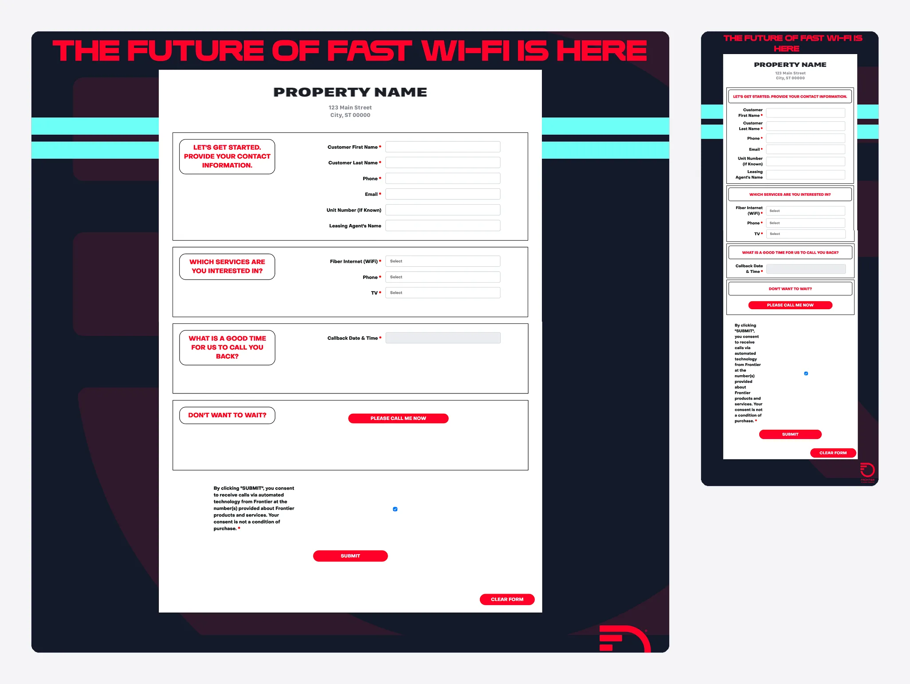
The original form, desktop and mobile. The property name and address are placeholders. The language select was two red buttons, Continue in English and Continuar en Español, sitting at the top of a large, mostly empty white card.
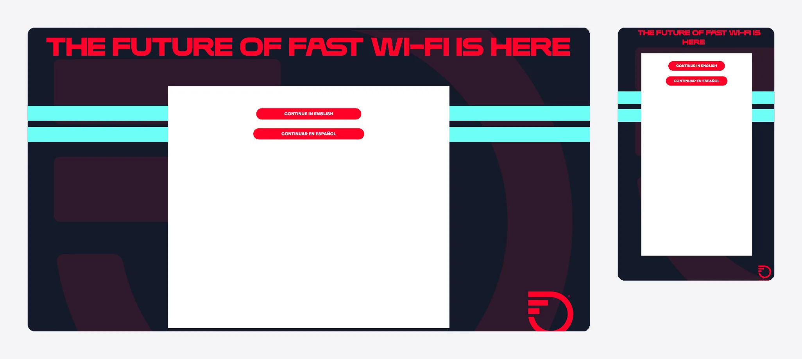
The original language select. The thank-you page had a large red check mark and a short message, with a note giving the callback time and a phone number.
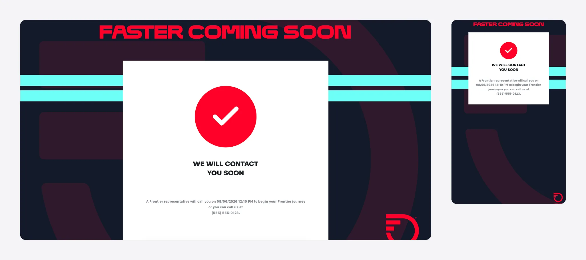
The original thank-you page. The phone number is a placeholder. The redesign
I replaced the dark page with a clean white one and the neon headlines with simple bold ones. Questions became plain headings above rounded fields, and the actions became pill buttons: black for "Please call me now" and red for Submit. I made a small style guide of my own, adapted from some of Verizon's official styling. The font and color palette closely match Verizon's website. I left out the brighter marketing palette, the yellow and beige, because it was too bold for a web form. The Frontier logo still shows, with "A Verizon Company" under it, because the move was still in progress.
On the form, I kept the same four groups of questions and turned each into a centered heading. The property name and address sit in a gray box at the top, under the logo. On desktop the labels sit to the left of their fields in a single narrow column. On mobile they sit above the fields, so every label fits on one line and the fields can use the full width.
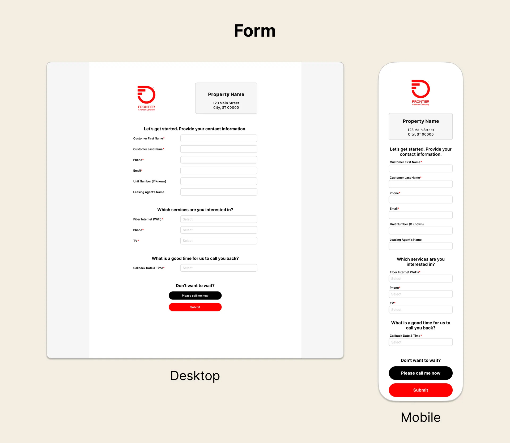
The final form. The property name and address are placeholders. The language select was the one screen that got real back and forth. I first showed two options: pill buttons like the original design, and hollow circles with EN and ES inside them. We went back and forth and settled on the circles, which I liked better. It's now a short, centered step: the logo, "Select a language", and the two circles with the language names under them.
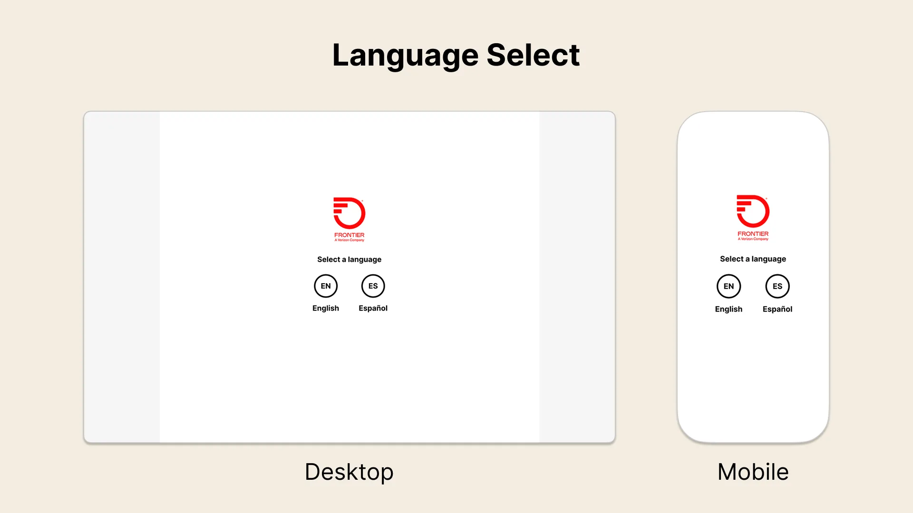
The final language select. The thank-you page is short and centered too. It keeps the confirmation message and the callback details, and drops the large icon and the heavy headline.
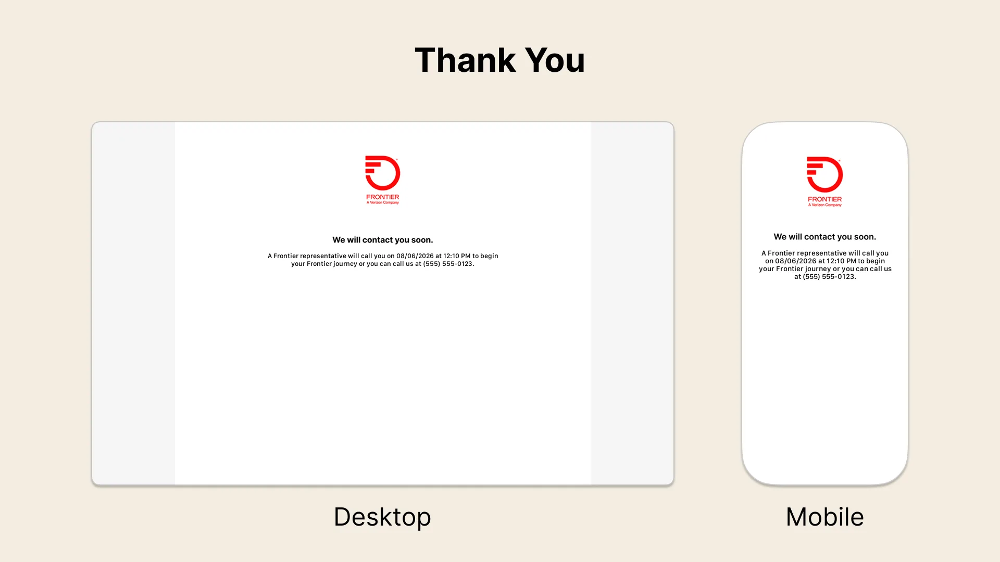
The final thank-you page. The phone number is a placeholder. Handoff and outcome
There wasn't much feedback beyond the language select. Once the designs were accepted, I wrote the CSS by hand for both desktop and mobile, and the handoff was simple. It went live, and as far as I know it's still in use.
What I learned
This project taught me more about the difference between marketing material and UX/UI design, and how both are part of a larger brand style. Verizon's marketing colors work well in an ad but felt too bold for a form, so I borrowed from the brand with that in mind.
-
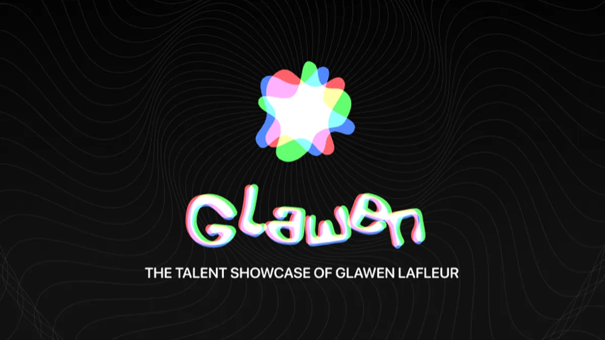
Portfolio, 2024
A playful portfolio built on blended color.
A playful portfolio built on blended color.
Role: UX/UI Design, Web Development
- Figma
- HTML
- CSS
- JavaScript
Overview
I have redesigned my portfolio more times than I can count. Part of that is an inability to sit still, and part is a perfectionist's attention to detail on projects I care about. For this version I wanted a mix of professionalism and fun, so I chose a much lighter and more colorful theme than earlier iterations. This was a personal project. I built it alone in 2024 over about a month, with a few friends looking at it as I went. I designed it in Figma, then coded everything by hand in HTML, CSS and JavaScript.
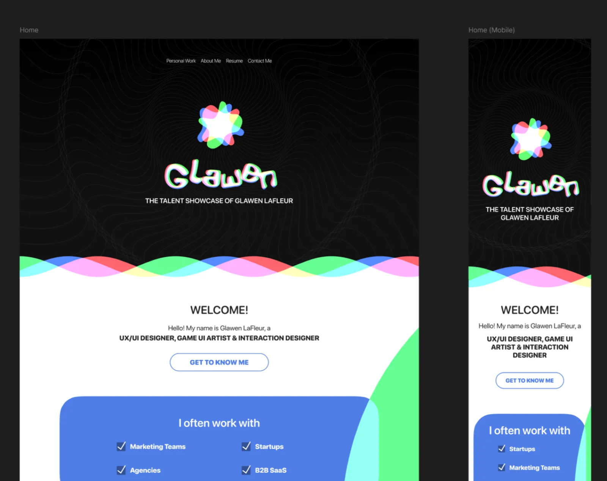
The final home page concepts, desktop and mobile. Screen blending
While exploring concepts, I got hooked on the CSS mix-
blend- property. With the "screen" value and RGB shapes, I could blend colors into white. I came up with this setup myself: three SVGs, one red, one green and one blue, animated at different speeds, make the flowing wave effect.mode 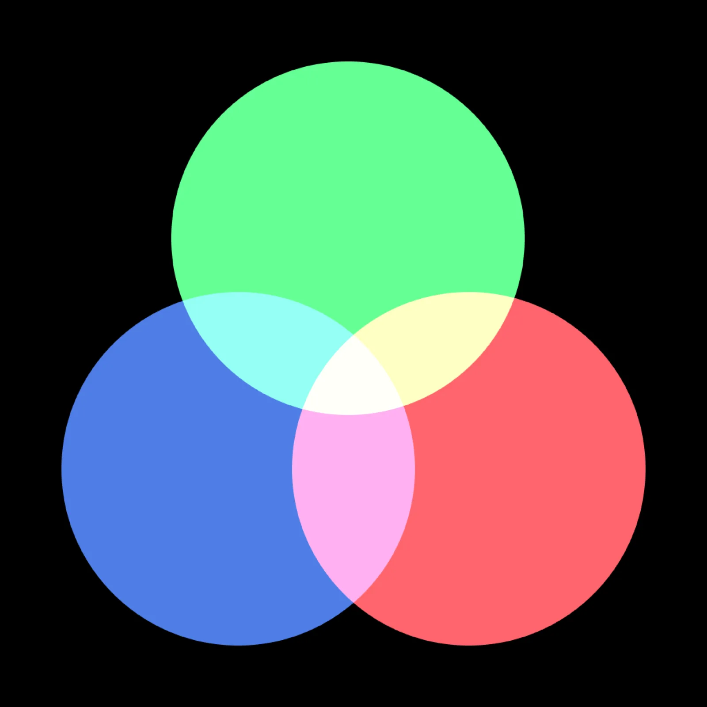
The screen blending technique. I used the technique behind the "blob" and the sinewaves that run across the home page.
A rounded menu
On mobile, a plain three-line hamburger icon didn't sit right with the rounded font and shapes used across the site. After trying different forms, I landed on tapered, rounded bars for the menu and a matching close icon.
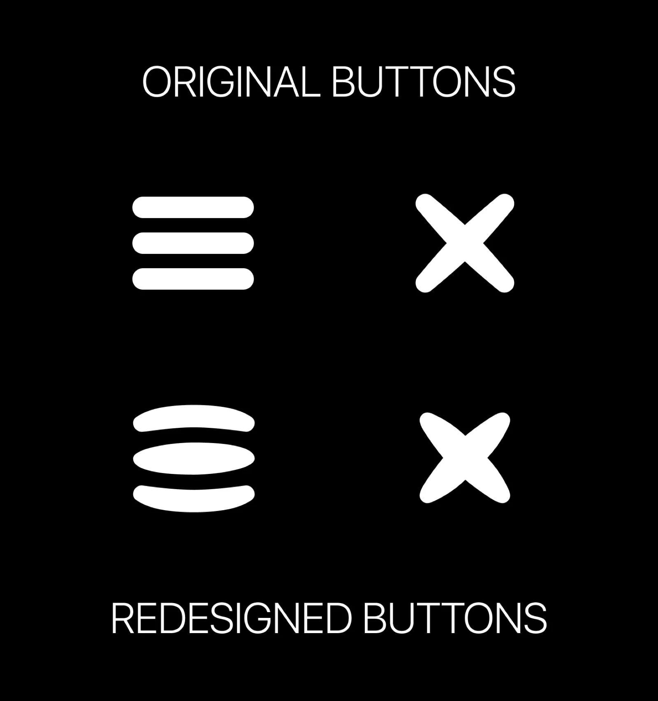
Original buttons above, redesigned buttons below. -
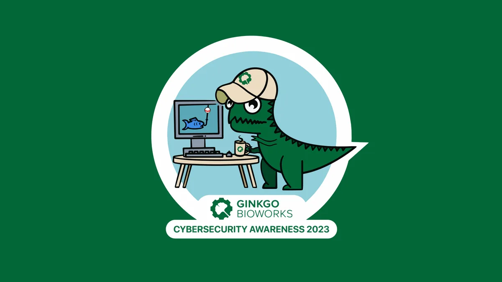
Ginkgo Bioworks
A phishing-savvy dino for Cybersecurity Week.
A phishing-savvy dino for Cybersecurity Week.
Role: Logo Design, Illustration
- Procreate
- Figma
Overview
In 2023, I created the mascot for Ginkgo Bioworks' Cybersecurity Awareness Week. This was paid freelance client work. I was the only designer, and I went through a few rounds of revisions with Ginkgo's design team.
The Cyber Security Dino
The dino sits at a desk in a company cap with a coffee mug, looking suspiciously at a fish dangling from a hook on its monitor. It is a playful nod to phishing, and it reuses the Ginkgo brand's greens so it feels part of the company. Ginkgo used it and printed it on T-shirts. I also made the crest and badges shown below.
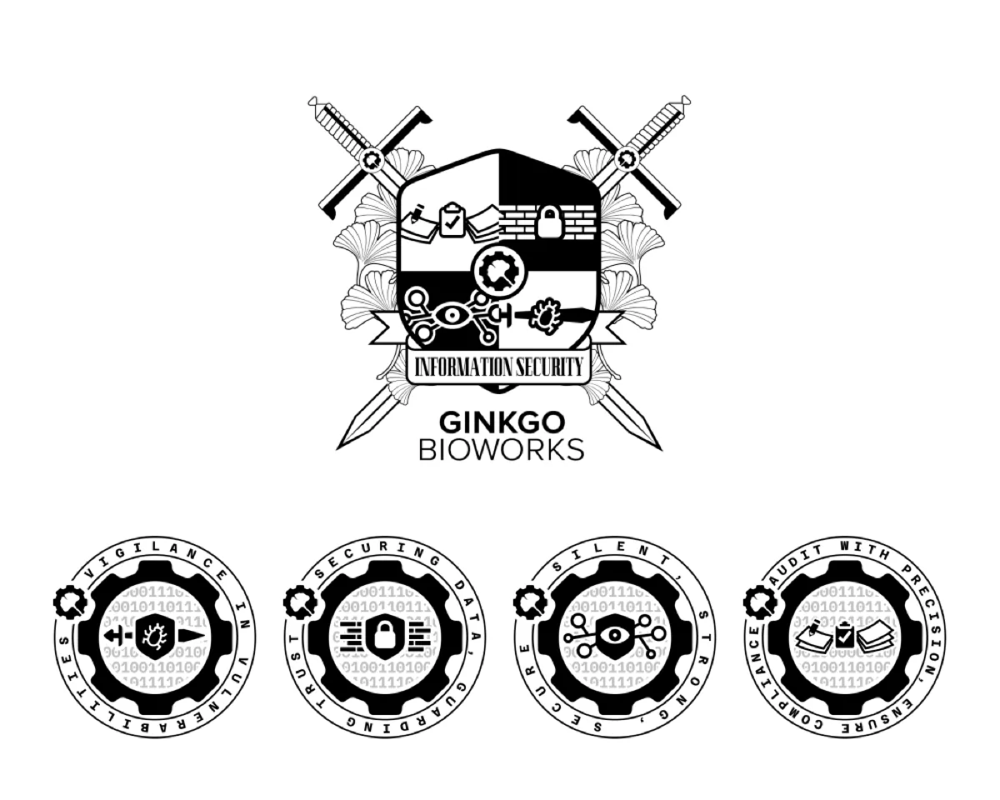
The Cyber Security Dino. -
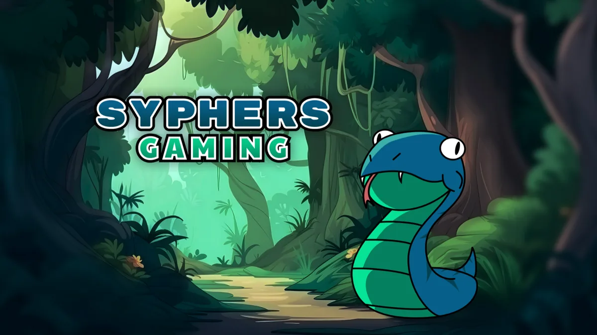
Syphers Gaming
A friendlier snake for a friend's community.
A friendlier snake for a friend's community.
Role: Brand Design
- Procreate
- Figma
The brief
This was an unpaid personal project for Syphers Gaming, a community I spend time in, run by a friend. I was the only designer, and the only other input was notes from the community owner. The original logo and style, shown below, featured a spooky dark jungle and an aggressive logo. The brief was to keep the colors and replace the rest with something sillier and friendlier.
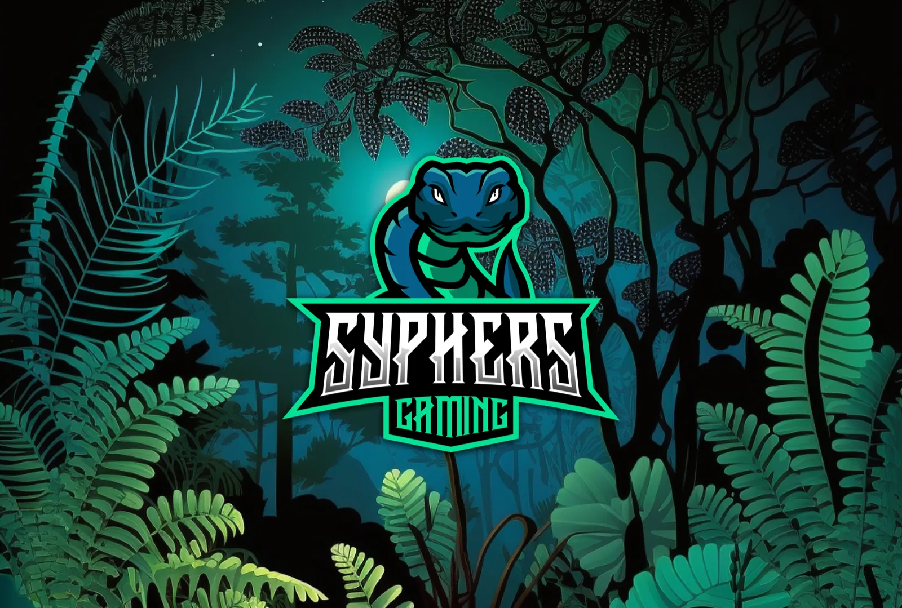
The original style. A friendlier snake
I built on the existing colors and started drawing snakes. After some back and forth with the owner to tweak the designs, we landed on the final mascot.
The logo style guide. Custom emoji
Discord supports custom emoji, so I extended the mascot's personality into a set of them for everyday chat.
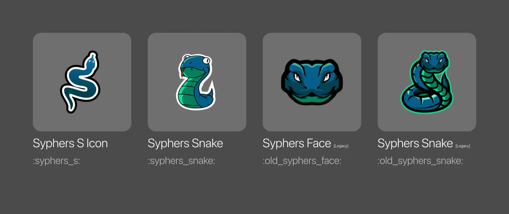
The custom emoji. Outcome
The mascot and emoji were adopted and are still used today.
-
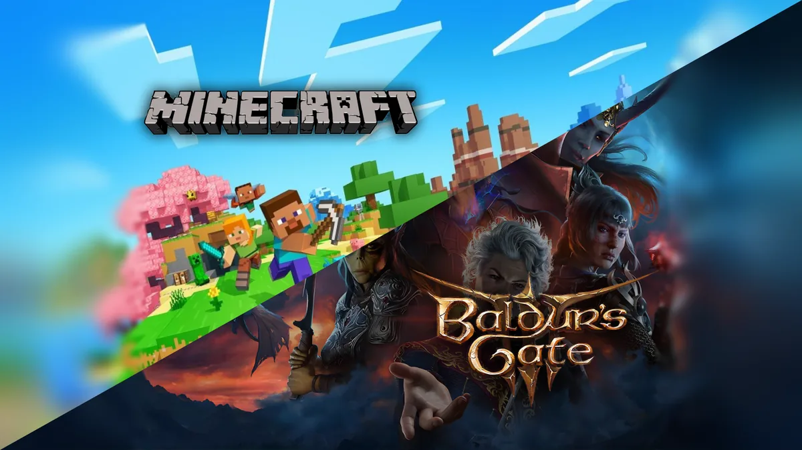
Minecraft Meets Baldur's Gate
Serious weapons for a not-so-serious game.
Serious weapons for a not-so-serious game.
Role: 3D Modeling
- BlockBench
Overview
This is a personal project I did for fun. I play both Minecraft and Baldur's Gate 3 a lot, and I wanted a reason to learn BlockBench so I could create for Minecraft. I made three weapons inspired by Baldur's Gate 3. Each is a stylized interpretation of its in-game counterpart that embraces Minecraft's blocky look. They exist only in BlockBench and have never been used in a mod or in the game.
Reference and approach
I began by gathering visual references from in-game screenshots and online wikis, studying the silhouette, color palette, and key features of each weapon. BlockBench is a low-poly, cube-based tool, so I had to find creative ways to simplify complex shapes while keeping the essence of each weapon.
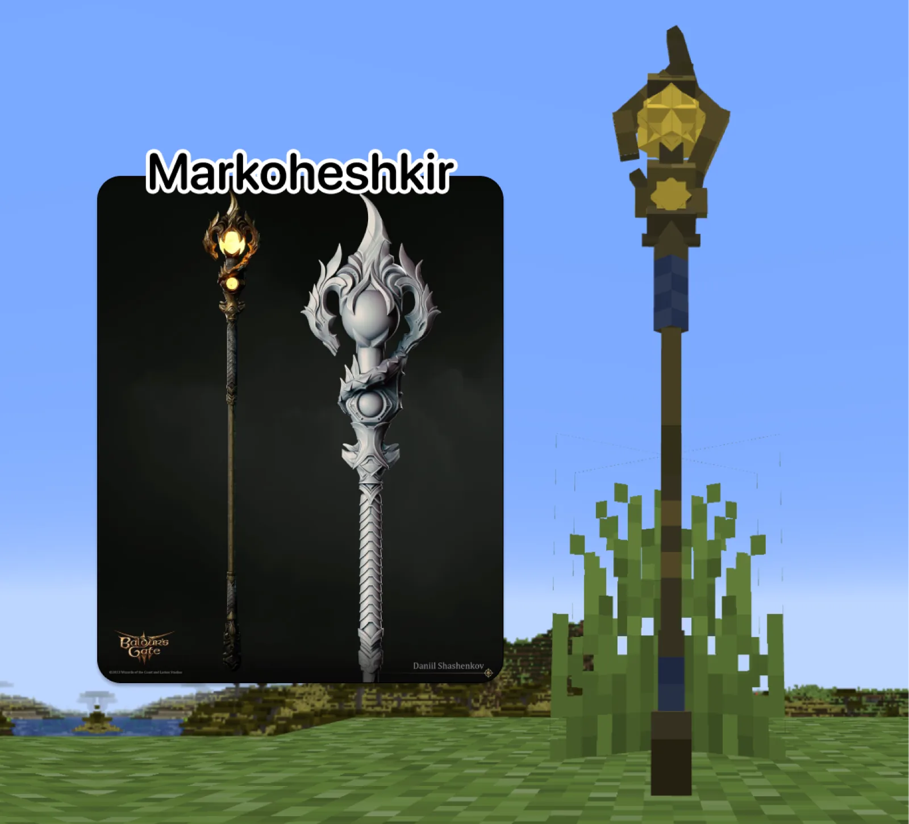
Markoheshkir, built in BlockBench beside its reference art. Part of this work's copyright is owned by Larian Studios and is used under the Larian Fan Content Policy. Blocking out and detail
I blocked out each model with basic forms to get the proportions right, then refined the details and added depth with subtle layering and, where supported, creative use of transparency. I leaned into stylized exaggeration for readability, especially on smaller models like Crimson Mischief.
The Sword of Chaos. Reference image from bg3.wiki, uploaded by ShadowOake. Texturing
I painted the textures by hand directly in BlockBench, using custom palettes that capture each weapon's personality.
A mace in the End, with its in-game reference. Part of this work's copyright is owned by Larian Studios and is used under the Larian Fan Content Policy. Crimson Mischief in the Nether, with its reference art.